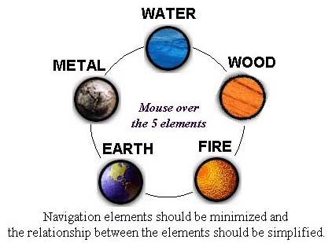

|
| ||
|
| ||
June 17, 1998
The following article was originally published in the Site Builder Network Magazine "Site Lights" column. (Now MSDN Online Voices "Design Discussion" column.)
Serves: Animation to thousands of viewers
Preparation Time: 2 hours
Follow this easy recipe if you would like to reduce Web animation production time, quickly meet a deadline, or create a fully interactive multimedia experience for your Web site.
"Because Liquid Motion is object oriented, you can take an actor and assign a behavior to him and then forget about him; he is now "alive" in the world you created. In a frame-based program, you have to maintain and control that actor with script or positioning every moment of your animation; you have a fixed movie, and if you're good at scripting, you can create the illusion of a dynamic world.
With Liquid Motion, you can have a truly dynamic world -- one that reacts to parameters you set, from interactivity from the user, the time of day, the phase of the moon, to the price of tea in China. To take advantage of this difference, it is important to create media and scenes that can be used in a wide variety of ways. It is also easy to adjust the parameters you set, so there is no end to the tinkering and playing you can do to your animation, just to see what happens!"
"Because of how easy it is to animate in Liquid Motion, you should consider any object can (will) move against what you have in the background. Transparent GIFs should be cleaned, so there is as little anti-aliasing against the background as possible. Also, because it is for the Internet, it's important to watch the K size."
"Web designers and graphic artists need to realize that a Liquid Motion animation can be a design element for an existing site. They can be placed and used just as you would a GIF or JPEG, so they can be designed into a page from the beginning. For example, you could create an animation the same size and shape as a JPEG that was originally in your page, and start your animation off with the same JPEG. For Internet Explorer 4.0 users, the background for your entire animation can be transparent, so your elements can appear to play over your actual page."
Download and install your trial version of Liquid Motion  . Start up Liquid Motion, and begin to play. Next, take a look at the user interface of the tool. Become familiar with the smart timeline, the structure view, the animation recorder, and other UI elements
. Start up Liquid Motion, and begin to play. Next, take a look at the user interface of the tool. Become familiar with the smart timeline, the structure view, the animation recorder, and other UI elements  .
.
Choose a scene, import some graphics, and start to play.
I followed the recipe above and created the Elements animation for my last Site Lights article in about an hour.

Figure 1. Screen shot of the Elements Liquid Motion sample
Over all, I am very impressed by how easy this tool is to use. I found it quite intuitive; I didn't need to look anything up in help. A long time ago, I created a CD-ROM prototype using Apple's Media Tool Kit. This process enabled me to learn about authoring object-oriented interactivity. Interactivity authoring all came back to me as I started to create Liquid Motion triggers, which enable interactions. I realized how easy it was to author interactivity using Liquid Motion.
For more Liquid Motion recipes, visit the Liquid Motion Web site  .
.
Nadja Vol Ochs is the design consultant in Microsoft's Developer Relations Group.
Photo Credit: PhotoDisc
Did you find this material useful? Gripes? Compliments? Suggestions for other articles? Write us!
© 1999 Microsoft Corporation. All rights reserved. Terms of use.